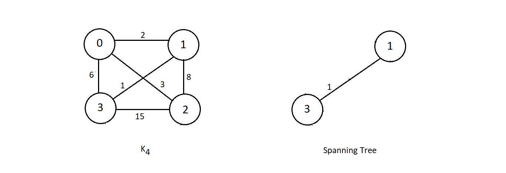
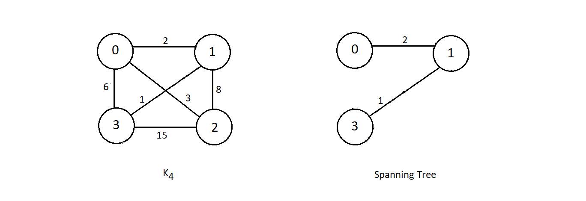
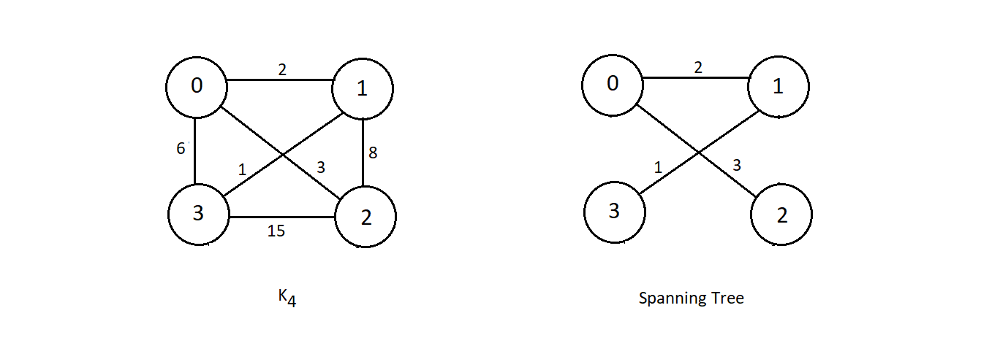
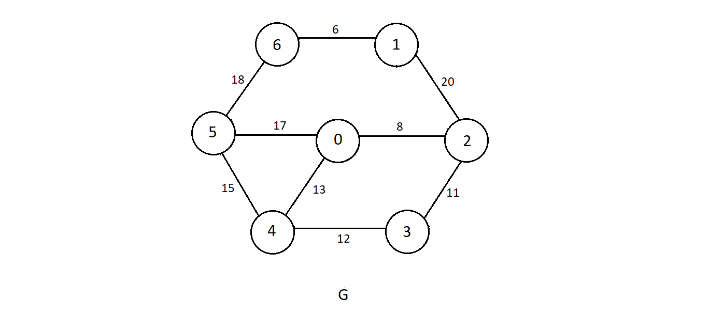

×
Home
Data Structures and Algorithms
Prims Minimum spanning tree algorithm
Prim's Algorithm
Prim's algorithm uses the Greedy approach to find the minimum spanning tree.
There are mainly two steps that this algorithm follows to find the minimum spanning tree of graph.
We start with any node and start creatng the Minimum spanning tree.
In Prim's algorithm, we grow the spanning tree from a starting position unit n-1 edges are or all nodes are covered.
Example, consider the complete graph with 4 vertices, k4 illustrated below.
Now, as the first step says, we can start with any node in the graph.
Arbitrarily, we will choose node 1.
And since the edge between nodes 1 and 3 is the least weighted, we'll consider this edge in our minimum spanning tree.

we'll try involving node 0 in our spanning tree as it weighs least from all the options available

we connect 0 to node 2 as this weights least out of all the available options

The cost of this spannig tree is (1+2+3), i.e., 6 which is the minimum possible.
Try yourself ↓
